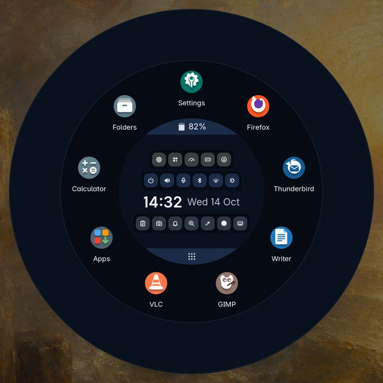
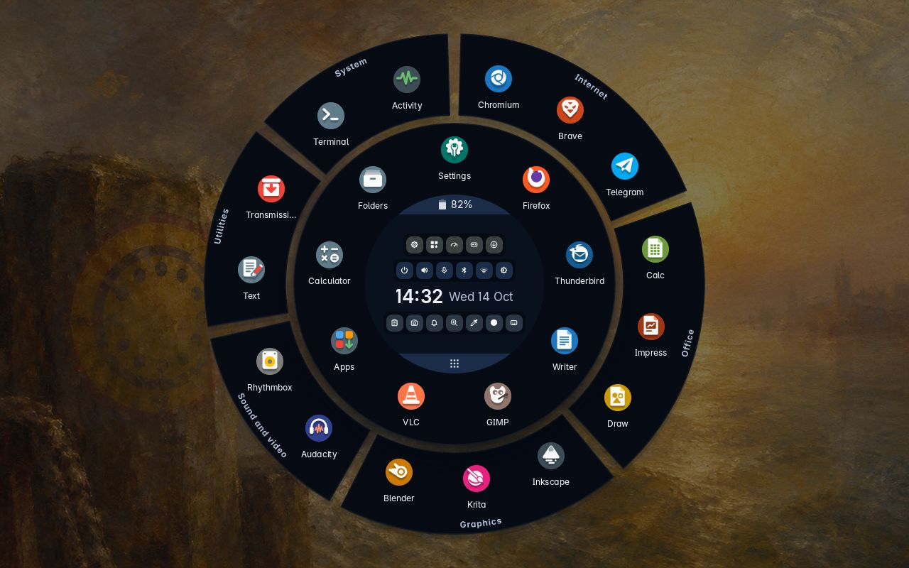
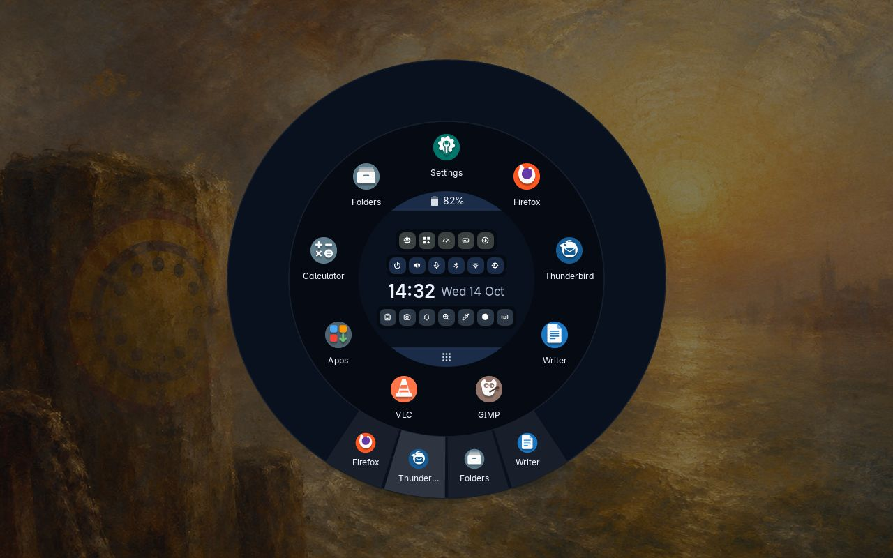
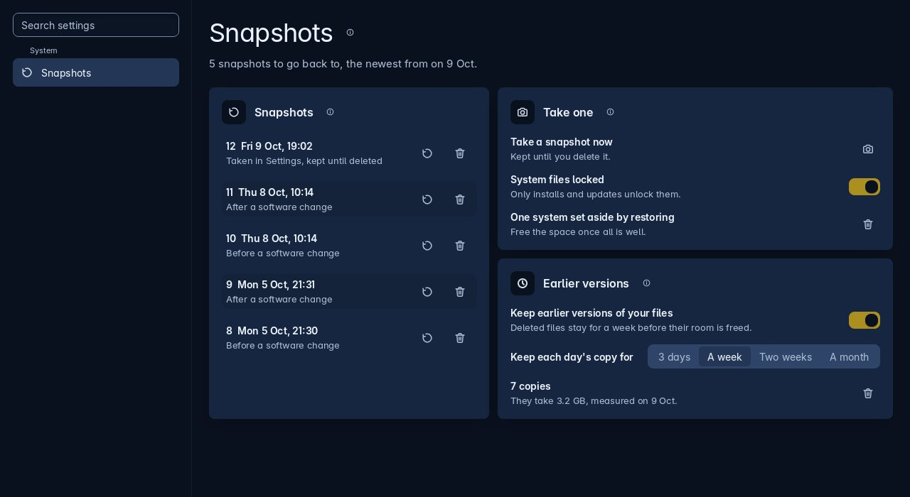
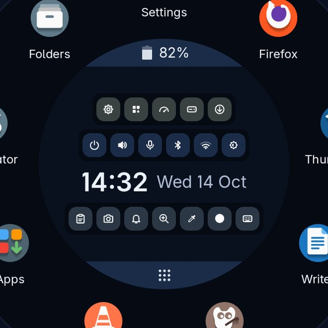

November 2026
Newthe first beta
No bar, no dock, no menu. Just one ring.
Trindle has no bar along an edge, no menu at one end and no icons filling the middle. Click twice at the edge of the screen, or press Super, and a ring opens where you are, your programs round it and the clock in the middle. Start what you want and it opens as a normal window. Close the ring and the screen is yours again.
Trindle is now in beta: we think it is ready to try, and what we want now is for people to run it on their own machines and tell us what breaks.

- What it isA desktop with just one ring: one Rust program, with Debian stable underneath
- What it costsNothing. Free software under the GPL, with the source made public at the first release
- What it sendsNo account and no telemetry. A problem report goes only when you press Send
- How to try itWrite the image to a USB stick and look round before you install anything

Everything is in the circle
Your favourites sit in a ring round the middle. Everything else is behind one band in the middle, All apps, which spreads it round the outside in pieces by kind: Internet, Office, Graphics and so on. The clock and the date are in the centre, with rows of small round buttons round them for sound, Bluetooth, Wi-Fi, brightness and power, and for the clipboard, screenshots, notifications and the magnifier.
Press one of those buttons and a round panel opens in the middle of the ring: volume and microphone, Bluetooth devices to pair, your Wi-Fi networks with a box for the password, the battery and the power modes. You are never sent off to a different window to change the volume.
The rest of the screen stays yours
With the ring closed, the screen is completely clear: no bar, no dock, no tray and no clock. You see your windows and your wallpaper, and nothing else.
What a bar would hold is in the ring. Open windows are tabs along the bottom of the outer ring, one for each, and pointing at one shows that window in the middle. Tray icons of programs that ask for one, the clipboard, notifications and screenshots are in the middle, with a magnifier. Press Super and D to put every window away and see the wallpaper, and press them again to bring the windows back.

Settings you can read
A setting is named after the thing it does, in the language you would use at the kitchen table, on its own full-width row.
Light or dark. Twenty colours to pick the highlight from, or one you type, and the whole desktop follows at once. The program icons are Trindle’s own, round or square, chosen on the same page. Every page has a small i beside its name that explains that page in the same plain words as this site, and it works with the network off.


A photograph before every change
On a Btrfs disk, which is what the installer makes, the system is photographed before and after every install, update and removal. Try anything. If it goes wrong, put the picture back and it is as if it never happened. If the computer will not start at all, hold Esc as it starts: the snapshots have their own entry in the boot menu.
Your home folder is left out of them, so going back never touches your documents. It has snapshots of its own, one a day, so an older version of a file can be had back from Folders.
Apps, and carrying them with you
Nothing is installed for you, not even a browser. Apps offers Flathub, AppImages and Flatpak files from GitHub, and a page of software sources for the makers who run their own. Tick what you want on the first screen and it is in the ring when it is done.
In the same list is Move your apps. It makes one file holding your Flatpak apps, their data, your AppImages and Trindle’s own settings. Open that file on a different machine and the apps are installed again with their settings. Your documents are not in it.


Updates are one button
There is no terminal to open and nothing to remember. Open Apps and go to Updates: Apps, Trindle and Debian each have one round button that fetches what is waiting, with a snapshot taken round the change. When updates are waiting, a button in the middle of the ring installs them too.
Debian’s security fixes install themselves every day without asking anybody, unless you switch off Check for updates in Settings, About this computer.
The rest of what is different
None of these is the headline. Together they are most of the reason Trindle feels unlike the desktop you are used to.
One button in the middle turns it on. Then hold anywhere on the screen and a circle follows your finger, two and a half times life size, over every program.
On a touchscreen a keyboard is one press away in the middle of the ring, once you switch it on in Settings.
Activity says in one plain sentence what the computer is doing, and draws every program as a bubble as big as the memory it holds. Ctrl, Shift and Esc open it.
Settings looks for printers on the network and over the wire, works out which driver each one wants, and adds it. No driver disc, no model number.
No account to make and no telemetry. The machine looks for updates by itself, and reaches out when you install an app or look for one. The whole list is written down.
Whichever highlight you choose runs through the ring, the buttons and the switches at once. Program icons come in Trindle’s own two sets, round or square, so a screen of them looks like one set.
Start from a USB stick
Write the image to a stick, start the computer from it, and have a look round. Nothing on the disk is touched until you press Install. When you do, it asks four things and gets on with it.
The keyboard and the clock follow it.
The whole thing, or room beside a Windows or Linux you are keeping.
A password at the start, or the computer’s own chip, which unlocks it for you.
And a password. That is the lot.

Betawhat that means
The work is done. The testing is not.
The desktop described here is written and runs. What it has not had is time on other people’s hardware, other people’s printers and other people’s ideas about what a computer ought to do. If you have a spare machine, or room on a disk beside what is already there, please put it on and use it properly. If something is wrong, say so on the report page. That is the only thing standing between this and a first release.
Back up anything that matters before you install. It is provided as is, with no warranty, and you use it at your own risk.